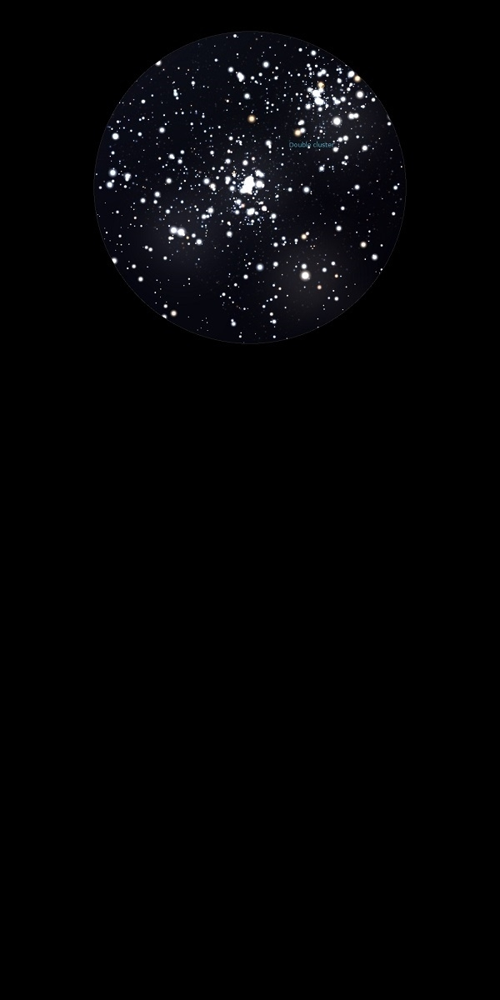

NGC 869
Open Cluster in Perseus
NGC 869
Mag 3.7
The Double Cluster with NGC 884, Caldwell 14
04/09/13
Fills
the eyepiece of 25mm with stars, bright and beautiful
10/11/13
'Top'
cluster of Double Cluster, really stunning in 18mm
20/08/14
The Double Cluster with NGC 884
NGC 869 is closest to Ruchbah, δ Cas and is the denser and and
more compact of the two
A pair of bright yellow stars like eyes sit in the centre of
the cluster
In 18mm both just fit into a beautiful FOV
07/08/16
Really doing the rounds of some of the most spectacular
deepsky sights tonight
Amazing sight in 12mm and 18mm but even better in 25mm where
both clusters fit into the FOV and fill it with a huge range
of magnitudes and colours, fantastic
28/09/16
Amazing in 18mm where each of the clusters sit neatly in the
FOV, filling it with a huge range of magnitudes of stars with
some lovely bright yellow stars in the mix
Great to pan the view between the two clusters which
interestingly have the same overall magnitude listed on
Stellarium, at Mag 4.0
25/11/17
Showing Rory some of the highlights of the Autumn sky
The Double Cluster certainly is fantastic,
each cluster fits neatly into a 24mm FOV